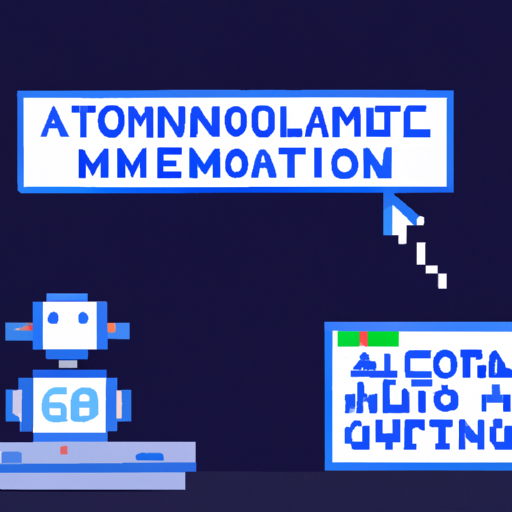

Generating Automated Blog Posts with OpenAI
Recently, OpenAI launched an API which allows developers to write automated blog posts using machine learning. It is a powerful tool for content creation and can be used to generate articles, blog posts, and even books.
While this technology is certainly useful, it has its cons. For example, the content generated is often repetitive and lacks the creativity and insight of a human writer. Additionally, machine-generated content is often difficult to read and comprehend.
On the other hand, OpenAI has some advantages over traditional content creation methods. First, it is much faster and cheaper than hiring a human writer. Second, it is possible to generate content that is tailored to a specific audience. And finally, it allows for more efficient content creation since it doesn’t require the writer to spend time researching and writing.
In conclusion, OpenAI is a powerful tool for content creation, but it has its limitations. It is important to remember that machine-generated content is not a replacement for human writers, but rather an additional tool to be used in conjunction with traditional writing methods.